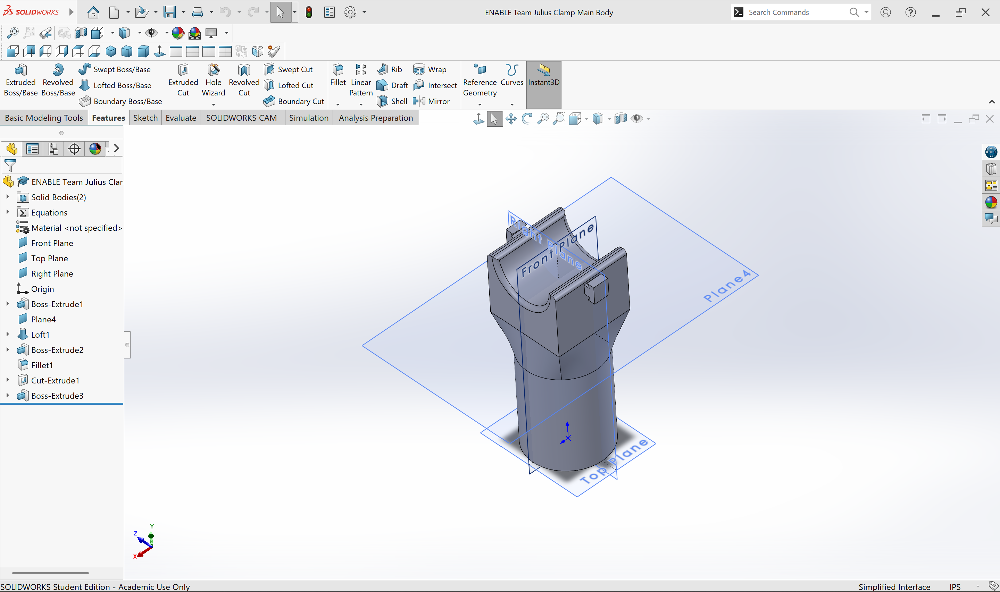
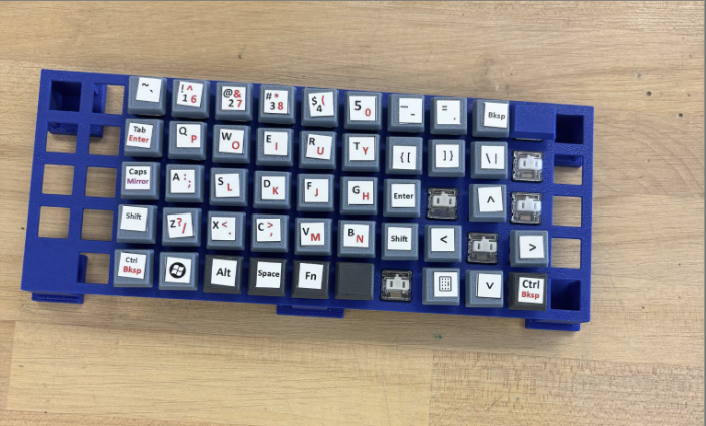
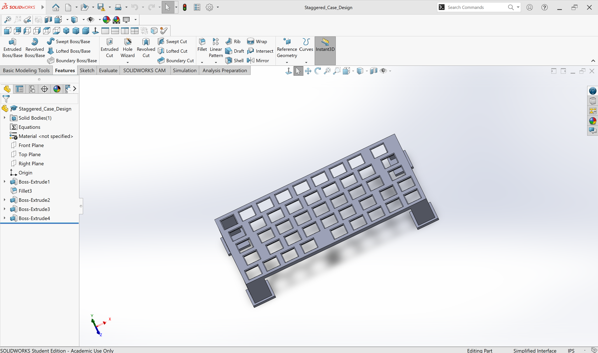

ENABLE ND is an engineering club at the University of Notre Dame that creates devices to enable the disabled through engineering. I have been a part of two teams in this club. Last year I was a part of the one-handed keybaord team where we created a keyboard for a disabled child with a limb difference, leaving him with only one hand. This year, I am the leader of a team creating an elbow-actuated prosthetic hand for the very active 11-year old who plays basketball, baseball, football, trumpet, rides a bike, shoots in competition for his school, and is part of a cooking class.
One-Handed Keyboard - On this team, I mainly focused on CAD through SOLIDWORKS and 3D printing our models of the keyboard. As my time with the team came to an end, all the mechanical aspects of the keyboard had been completed. All we had to left to do was work on the electrical components of the keyboard and to make it more interactive/visibly appealing. Elbow-Actuated Prosthetic Hand - After working on the One-Handed Keyboard team, I was promoted to leader of a different team, where we are working to develop an elbow-actuated prosthetic hand for a very active 11 year-old. He is involved in many different activities I described earlier, so we are making a univeral sleeve that is fit to the child's limb and then creating different attachemnts that can connect to the sleeve for each of the different activities he is a part of.
I have learned so much from these projects. They have taught me to see outside the box and have given me a vision for how I can use my passion of engineering to empower others. I have further developed my skills in CAD, 3D printing, and collaboration within a team setting.



